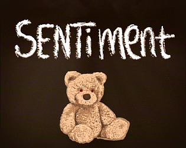

Sentiment is a psychological horror game that delves with themes of a dysfunctional family. You play as a little boy trying to take control of a situation that is beyond him.

Here is the Logo for Sentiment, using Canvas as a tool. The Design theme was Horror, and the Color Theme is Brown .